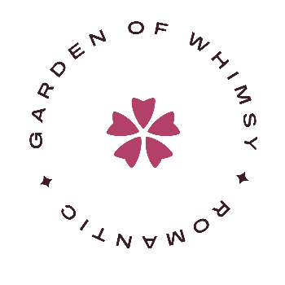
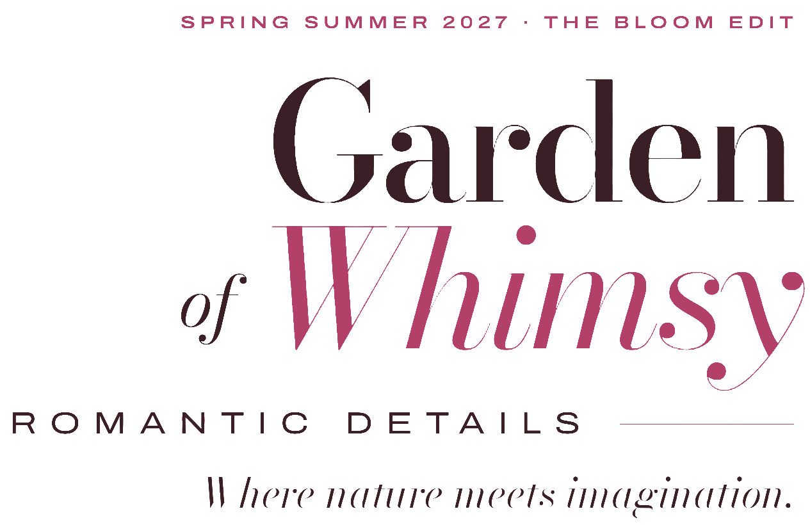
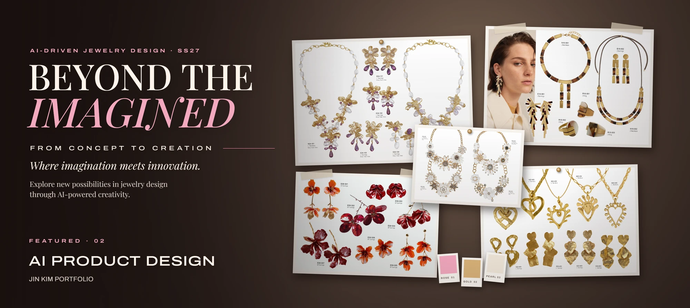
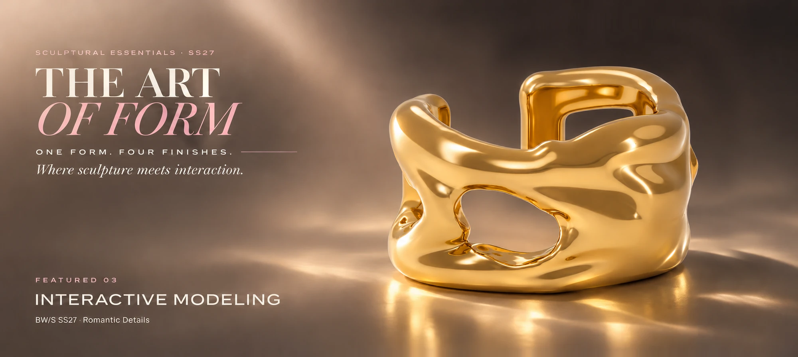
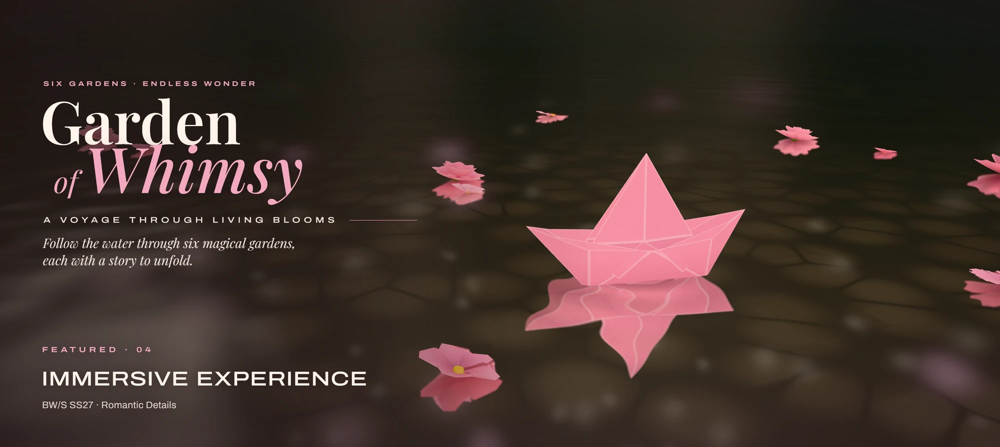

BW/S SS27 Romantic Details — Final Submission


FEATURED · 01
INTERACTIVE SLIDE DECK
BW/S SS27 · Romantic Details
OPEN THE DECK-

02
AI PRODUCT DESIGN
Jin Kim Portfolio
VIEW THE DESIGNS -

03
BLENDER INTERACTIVE MODELING
EXPLORE THE CUFF -

04
GARDEN OF WHIMSY
Immersive Interactive Jewelry Garden Journey
ENTER THE GARDEN -

05
MOVIE
WATCH THE FILM -

06
GAMES
PLAY THE GAMES -
![Where design meets manufacturing, my contribution to Beth Ward Studios: a studio board tracing one pair of floral earrings from collection concept, AI visual exploration and a 3D CAD wireframe model to the technical specification, material and finish, prototype and development, an on-model portrait and the final product. Design leadership, hands-on development expertise, and AI-driven visual thinking, connecting brand direction to product reality and new digital experiences. Featured 07, Strategic Contribution: design, development, digital experience.](./assets/images/H07_2000x894.webp)
07
STRATEGIC CONTRIBUTION
Design · Development · Digital Experience